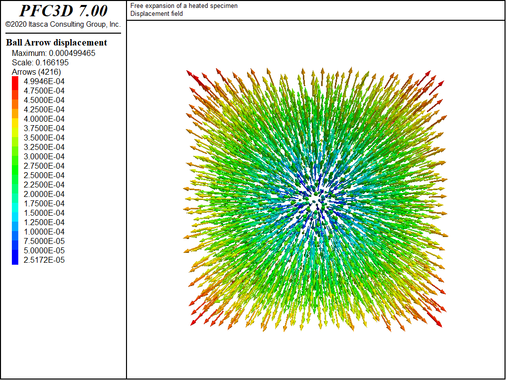
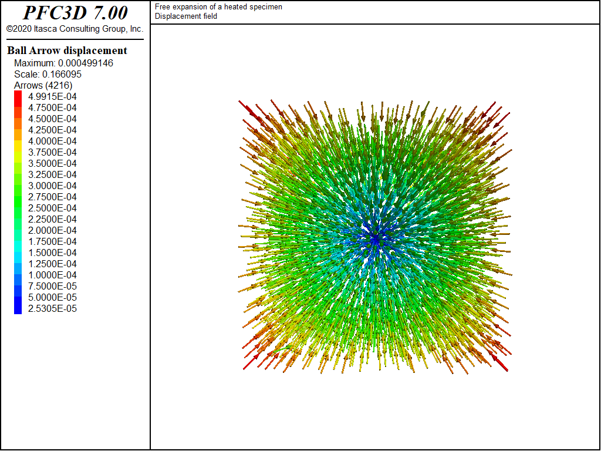
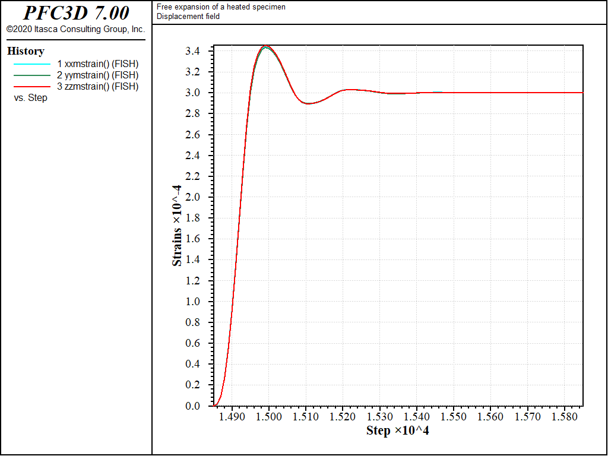
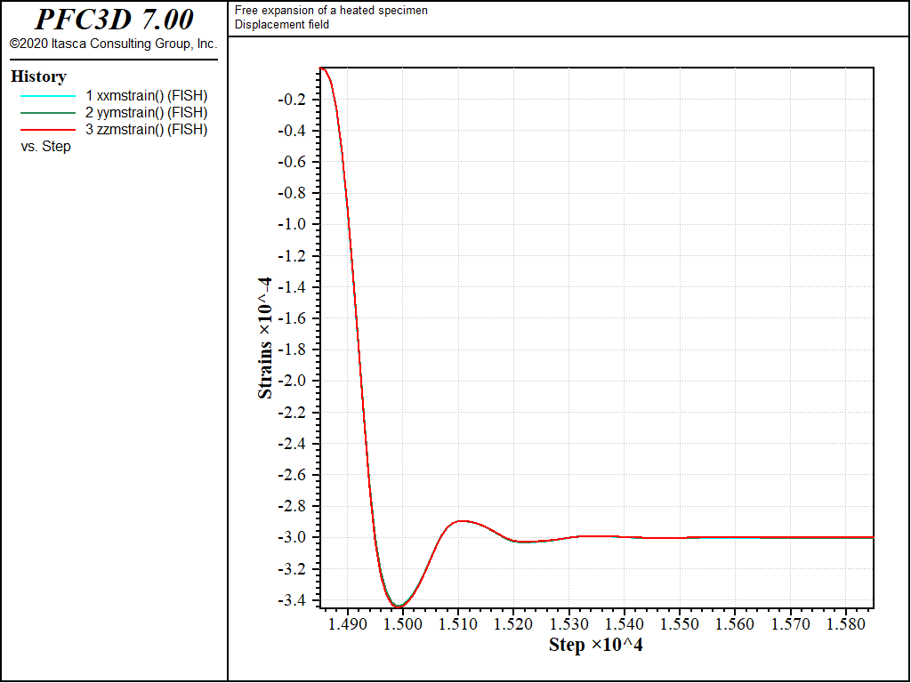

边界自由的受热试样
注意
本算例的项目文件可在 PFC 中查看或运行。[1]所用的数据文件（data files）列于本算例末尾。
对边界无约束的立方体试样施加温度变化 \(\Delta T\)。测量热致应变，并与各向同性弹性连续体的解析值比较。
解析值
含热致应变的应力—应变关系由式 (1) 给出（[Timoshenko1970b]）：
其中 \(E\) 和 \(\nu\) 分别为杨氏模量和泊松比。此外，\(\alpha_t\) 为线热膨胀系数。
自由边界下热致应变的解析值由式 (2) 给出：
模型与结果
本例使用文件“free_expansion.dat”。创建尺寸为 2 × 2 × 2 m 的试样，包含约 4000 个尺寸均匀分布的球颗粒（半径范围 0.05 至 0.08 m），孔隙率为 0.36。试样生成后，在球颗粒—球颗粒接触上安装接触黏结，删除周围墙，并使试样达到平衡。
应变使用位于试样中心、半径为 0.95 m 的测量球测量。在 PFC 中，颗粒热膨胀系数与线热膨胀系数相同：本例中 \(\alpha_t\) = 3 × 10-6/°C。
\(\Delta T\) = +100°C 时的预期应变为
\(\Delta T\) = -100°C 时的预期应变为
图 1（Figure 1） 和 图 2（Figure 2） 显示正、负温度变化产生的位移矢量，分别表现为各向同性膨胀和各向同性收缩。图 3（Figure 3） 和 图 4（Figure 4） 分别显示膨胀和收缩阶段记录的应变历史。
模拟结果与解析解一致。


图 1：热学各向同性膨胀结束时的位移场。


图 2：热学各向同性收缩结束时的位移场。


图 3：热学各向同性膨胀结束时的应变历史。


图 4：热学各向同性收缩结束时的应变历史。
参考文献
| [Timoshenko1970b] | Timoshenko, S. P. 和 J. N. Goodier。《弹性理论》（第 3 版）。纽约：McGraw-Hill，1970。 |
数据文件
free_expansion.dat
; 文件名：free_expansion.dat (3D)
;
; Itasca Consulting Group, Inc.
; ========================================================================
; 热学选项验证问题：
; 受热试样的自由膨胀
;
; ========================================================================
program log-file "free_expansion.log"
program log on
; ========================================================================
model new
model large-strain on
model title 'Free expansion of a heated specimen'
; 构建试样
model domain extent -5 5
contact cmat default type ball-ball ...
model linearcbond ...
method deformability emod 3.81e8 krat 1.0 proximity 0.005
contact cmat default type ball-facet ...
model linear ...
method deformability emod 3.81e8 krat 1.0
wall generate box -1 1
model random 10001
ball distribute porosity 0.36 ...
radius 0.05 0.08 ...
box -1 1
ball attribute position multiply 0.95
ball attribute density 1500.0 damp 0.7
model cycle 2000 calm 100
model mechanical timestep scale
model solve ratio-average 1e-4
contact method bond gap 0.005
contact property cb_tenF 1e20 cb_shearF 1e20
wall delete
ball attribute displacement multiply 0.0
model cycle 1000
model mechanical timestep auto
model solve ratio-average 1e-6
; 安装量测球并激活应变计算
measure create id 1 radius 0.95
fish define ini_mstrains
global mp = measure.find(1)
global mstrains = matrix(3,3)
end
[ini_mstrains]
fish define accumulate_mstrains
global msrate = measure.strain.rate(mp)
global mstrains = mstrains + msrate * global.timestep
global xxmstrain = mstrains(1,1)
global yymstrain = mstrains(2,2)
global zzmstrain = mstrains(3,3)
end
fish callback add accumulate_mstrains 11.0
fish history xxmstrain
fish history yymstrain
fish history zzmstrain
model save "initial"
;---------------- 情况 a：施加 +100 deg C ----------------------------
model configure thermal
ball thermal attribute expansion 3.0e-6
ball thermal attribute specific-heat 1.0e3
ball thermal attribute temperature 0.0
ball thermal attribute temperature-increment=100.0
model cycle 1
model thermal off mechanical on
ball attribute displacement multiply 0.0
model cycle 1000
model solve ratio-average 1e-6
model save "final1"
;---------------- 情况 b：施加 -100 deg C ----------------------------
model restore "initial"
model configure thermal
ball thermal attribute expansion 3.0e-6
ball thermal attribute specific-heat 1.0e3
ball thermal attribute temperature 0.0
ball thermal attribute temperature-increment=-100.0
model thermal on mechanical on
model cycle 1
model thermal off mechanical on
ball attribute displacement multiply 0.0
model cycle 1000
model solve ratio-average 1e-6
model save "final2"
program log off
program return
; ========================================================================
; 文件结束：free_expansion.dat (3D)
尾注
| [1] | 要在 PFC 中查看本项目，请使用程序菜单。
⮡ PFC |
⇐ Transient Thermal Response of Sheet with Constant Temperature Boundaries | Heated Specimen with Fixed Boundaries ⇒
| 这些内容对您有帮助吗？… | FLAC3D © 2019, Itasca | 原文更新于 2020 年 10 月 8 日 |